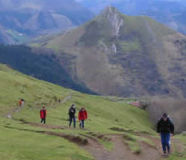

El agroturismo consiste en la prestación de servicios turísticos de alojamiento y restauración por parte de agricultores y ganaderos en sus propias granjas y caseríos.
Dentro de la Comunidad Autónoma Vasca La capacidad de cada caserío es limitada (12 personas como máximo) Ello permite disfrutar de unas vacaciones tranquilas, sin aglomeraciones, recibiendo un trato familiar y en contacto directo con el mundo rural y la Naturaleza. Los alojamientos se encuentran abiertos durante todo el año y, todos ellos, cuentan con agua caliente y calefación Existen actualmente una sola categoria si bien pueden ofrecerse varios tipos de servicios:
Todos los alojamientos agroturísticos tienen Hojas de Reclamaciones a disposiciónde los clientes, y su apertura ha sido autorizada previa inspección por parte del Departamento de Comercio, Consumo y Turismo del Gobierno Vasco.
En esta guia se presenta la oferta compuesta por los alojamientos que se encuentran en funcionamiento actualmente; sin embargo, se verá ampliada durante el transcurso del añocon la incorporacion de los que actualmente se encuentran en acondicionamiento.
El principal recurso con el que cuenta la comarca del Goierri es la natural. No en vano, es la entrada a los Parques Naturales de Aralar y Aizgorri. En ambas sierras contrastan las grandes superficies arboladas de hayedos, con los pastos de montaña, de donde proviene el renombrado Queso de Idiazabal. Los paseos y excursiones, tanto a pie como en bicicleta de montaña tienen aquí magníficas posibilidades.
Ascensión a la cumbre
de un grupo de excursionistas.
Otras referencias obligadas son: la tradicional feria de Ordizia (todos los miercoles del año) con una amplia oferta de productos autóctonos, en municipio de Zerain con un amplio patrimonio cultural y natural, con un centro de información turistica (Tl 943-801705). Legazpi, donde se encuentra toda la cultura del hierro, con la ferrería de Mirandola (data de 1335) como principal exponente (visitas guiadas concertadas Tl 943-720800). Santuario de La Antigua en Zumarraga, de comienzos del siglo XIII, construida con una perfecta combinación de piedra y madera.
| Agroturismo | Teléfono | Nº Plazas | Con Baño | Sin Baño | Desayuno | Comida/Cena | Derecho Cocina |
| ALTZAGARATE | 943 18 03 66 | 4 | - | HD. 21,00 € | 2,10 € | 6,00 € | - |
| ALDARRETA | 943 18 03 66 | 8 | - | HD. 19,60 € | 2,00 € | 6,80 € | 3,20 € |
| MANDUBIKO - BENTA | 943 88 26 73 | 4 | HI. 16,80 € | - | - | - | - |
| LIZARGARATE | 943 88 19 74 | 12 |
TA HD. 28,14 € TB HD. 22,50 € |
TA HI. 25,30 € TB HI. 22,50 € |
3,50 € | 8 € | - |